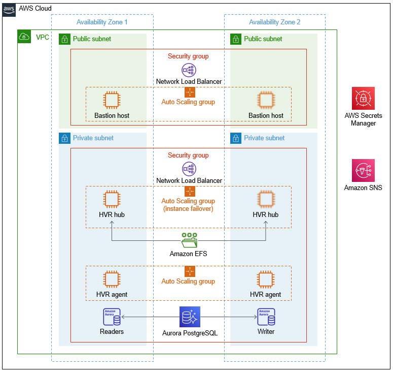

HVR Software on the AWS Cloud
Quick Start Reference Deployment

DRAFT DOCUMENT / UNOFFICIAL GUIDANCE
This portion of the deployment guide is located at docs/partner_editable/__settings.adoc_
July 2021 |
| Visit our GitHub repository for source files and to post feedback, report bugs, or submit feature ideas for this Quick Start. |
This Quick Start was created by HVR Software in collaboration with Amazon Web Services (AWS). Quick Starts are automated reference deployments that use AWS CloudFormation templates to deploy key technologies on AWS, following AWS best practices.
Overview
This portion of the deployment guide is located at docs/partner_editable/overview_target_and_usage.adoc
This guide provides instructions for deploying the HVR Software Quick Start reference architecture on the AWS Cloud. This Quick Start is for organizations that want to use HVR to replicate data between transactional databases and file systems. The architecture supports real-time change data capture (CDC) for databases, analytics, and migrations. For details on source and target configuration options supported by HVR, see the HVR documentation or the HVR Software website. |
| Amazon may share user-deployment information with the AWS Partner that collaborated with AWS on the Quick Start. |
HVR Software on AWS
This portion of the deployment guide is located at docs/partner_editable/product_description.adoc
Use cases for this Quick Start include the following:
In keeping with HVR’s recommended best practice for high availability, this Quick Start deploys HVR in a distributed architecture. The distributed architecture includes two HVR agents that are close to replication endpoints and an HVR hub that controls all replication flows. This architecture provides the following benefits:
Supported data sources include commonly used relational databases: Oracle, Microsoft SQL Server, Db2, PostgreSQL, and others. Destinations include Amazon services such as Amazon Redshift, Amazon Relational Database Service (Amazon RDS), and Amazon Simple Storage Service (Amazon S3), as well as many Amazon Elastic Compute Cloud (Amazon EC2)-supported technologies, including Snowflake. HVR processes communicate over TCP/IP connections using SSL data encryption. |
AWS costs
You are responsible for the cost of the AWS services and any third-party licenses used while running this Quick Start. There is no additional cost for using the Quick Start.
The AWS CloudFormation templates for Quick Starts include configuration parameters that you can customize. Some of the settings, such as the instance type, affect the cost of deployment. For cost estimates, see the pricing pages for each AWS service you use. Prices are subject to change.
| After you deploy the Quick Start, create AWS Cost and Usage Reports to deliver billing metrics to an Amazon Simple Storage Service (Amazon S3) bucket in your account. These reports provide cost estimates based on usage throughout each month and aggregate the data at the end of the month. For more information, see What are AWS Cost and Usage Reports? |
Software licenses
This portion of the deployment guide is located at docs/partner_editable/licenses.adoc
This Quick Start requires a subscription to the HVR for AWS - Bring Your Own License (BYOL) Amazon Machine Image (AMI) through AWS Marketplace. The HVR hub and agent instances use this AMI. This AMI has the HVR software and database drivers preinstalled and ready to use with your existing license. You need a valid license key to deploy this stack. To obtain a license if you don’t already have one, contact the HVR team at info@hvr-software.com or use the HVR Software website. Additional pricing, terms, and conditions may apply. For instructions, see the Subscribe to the HVR AMI section in this guide. You must also create a Secrets Manager secret before you deploy this stack. This secret is the plaintext secret HVR license key. During deployment, you are asked to provide the ARN for this secret, which is located in Secrets Manager. If you deploy the Quick Start without supplying a license file, the process creates and uses an empty Secrets Manager secret. After you obtain your license, update this secret with the license details. |
Architecture
This portion of the deployment guide is located at docs/partner_editable/architecture.adoc
Deploying this Quick Start for a new virtual private cloud (VPC) with default parameters builds the following HVR environment in the AWS Cloud.

Figure 1. Architecture for the HVR Software Quick Start on AWS
As shown in Figure 1, the Quick Start sets up the following:
|
Planning the deployment
Specialized knowledge
This deployment requires a moderate level of familiarity with AWS services. If you’re new to AWS, see Getting Started Resource Center and AWS Training and Certification. These sites provide materials for learning how to design, deploy, and operate your infrastructure and applications on the AWS Cloud.
This portion of the deployment guide is located at docs/partner_editable/specialized_knowledge.adoc
This Quick Start also assumes familiarity with basic concepts in networking, database operations, and data replication. |
AWS account
If you don’t already have an AWS account, create one at https://aws.amazon.com by following the on-screen instructions. Part of the sign-up process involves receiving a phone call and entering a PIN using the phone keypad.
Your AWS account is automatically signed up for all AWS services. You are charged only for the services you use.
Technical requirements
Before you launch the Quick Start, review the following information and ensure that your account is properly configured. Otherwise, deployment might fail.
Resource quotas
If necessary, request service quota increases for the following resources. You might need to request increases if your existing deployment currently uses these resources and if this Quick Start deployment could result in exceeding the default quotas. The Service Quotas console displays your usage and quotas for some aspects of some services. For more information, see What is Service Quotas? and AWS service quotas.
This portion of the deployment guide is located at docs/partner_editable/service_limits.adoc
| Resource | This deployment uses |
|---|---|
VPCs |
1 |
Subnets |
2 |
NAT gateway |
1 |
Internet gateway |
1 |
Security groups |
2 |
AWS Identity and Access Management (IAM) roles |
1 |
Auto Scaling groups |
3 |
Network Load Balancers |
2 |
c5 instances |
4 |
Aurora PostgreSQL–compatible edition |
1 |
EFS file system |
1 |
Secrets Manager secrets |
4 |
Supported Regions
This portion of the deployment guide is located at docs/partner_editable/regions.adoc
This Quick Start supports the following Regions:
-
us-east-1, US East (N. Virginia)
-
us-east-2, US East (Ohio)
-
us-west-1, US West (N. California)
-
us-west-2, US West (Oregon)
-
eu-north-1, Europe (Stockholm)
-
eu-west-1, Europe (Ireland)
-
eu-west-2, Europe (London)
-
eu-west-3, Europe (Paris)
-
eu-central-1, Europe (Frankfurt)
-
ca-central-1, Canada (Central)
-
sa-east-1, South America (São Paulo)
-
ap-south-1, Asia Pacific (Mumbai)
-
ap-southeast-1, Asia Pacific (Singapore)
-
ap-southeast-2, Asia Pacific (Sydney)
-
ap-northeast-1, Asia Pacific (Tokyo)
-
ap-northeast-2, Asia Pacific (Seoul)
| Certain Regions are available on an opt-in basis. For more information, see Managing AWS Regions. |
EC2 key pairs
This section applies only if the Cloudformation templates include EC2 instances.
Make sure that at least one Amazon EC2 key pair exists in your AWS account in the Region where you plan to deploy the Quick Start. Make note of the key pair name. You need it during deployment. To create a key pair, see Amazon EC2 key pairs and Linux instances.
For testing or proof-of-concept purposes, we recommend creating a new key pair instead of using one that’s already being used by a production instance.
IAM permissions
Before launching the Quick Start, you must sign in to the AWS Management Console with IAM permissions for the resources that the templates deploy. The AdministratorAccess managed policy within IAM provides sufficient permissions, although your organization may choose to use a custom policy with more restrictions. For more information, see AWS managed policies for job functions.
This portion of the deployment guide is located at docs/partner_editable/pre-reqs.adoc
Prepare for the deploymentTo help secure communication between the HVR components—the HVR hub and agents—this deployment uses a private key and public certificate pair. The template provides a default pair that you can use. (For the default values, see the Parameter reference section of this guide under the parameters Also before you deploy this Quick Start, create a Secrets Manager secret. This is a text secret that holds the full HVR license key. During deployment, you are asked to provide the ARN for this secret. |
Deployment options
This portion of the deployment guide is located at docs/partner_editable/deployment_options.adoc
This Quick Start provides a single deployment option:
|
Deployment steps
This portion of the deployment guide is located at docs/partner_editable/deploy_steps.adoc
Sign in to your AWS account
-
Sign in to your AWS account at https://aws.amazon.com with an IAM user role that has the necessary permissions. For details, see Planning the deployment earlier in this guide.
-
Make sure that your AWS account is configured correctly, as discussed in the Technical requirements section.
Subscribe to the HVR AMI
This Quick Start requires a subscription to the Bring Your Own License AMI for HVR in AWS Marketplace.
-
Sign in to your AWS account.
-
Open the page for the HVR BYOL AMI in AWS Marketplace, and then choose Continue to Subscribe.
-
Review the terms and conditions for software usage, and then choose Accept Terms.
A confirmation page loads, and an email confirmation is sent to the account owner. For detailed subscription instructions, see the AWS Marketplace documentation.
-
When the subscription process is complete, exit out of AWS Marketplace without further action. Do not provision the software from AWS Marketplace—the Quick Start deploys the AMI for you.
Launch the Quick Start
| For efficiency, when you deploy this Quick Start, run your HVR environment in the same AWS Region and Availability Zone as the target database or service. Do not use the same repository database schema that you’re using as a source or destination for your data replication. |
Each deployment takes about 30 minutes to complete.
-
Sign in to your AWS account, and deploy HVR into a new VPC on AWS. (View the template.)
-
Check the AWS Region that’s displayed in the upper-right corner of the navigation bar, and change it if necessary. This Region is where the network infrastructure for HVR is built. To maximize efficiency, choose the same AWS Region as the target database or service. The template is launched in the us-east-1 Region by default. For other choices, see Supported Regions earlier in this guide.
-
On the Create stack page, keep the default setting for the template URL, and then choose Next.
-
On the Specify stack details page, change the stack name if needed. Review the parameters for the template. Provide values for the parameters that require input. For all other parameters, review the default settings and customize them as necessary. For details on each parameter, see the Parameter reference section of this guide. When you finish reviewing and customizing the parameters, choose Next.
+
+ . On the Configure stack options page, you can specify tags (key-value pairs) for resources in your stack and set advanced options. When you’re finished, choose Next. . On the Review page, review and confirm the template settings. Under Capabilities, select the two check boxes to acknowledge that the template creates IAM resources and might require the ability to automatically expand macros. . Choose Create stack to deploy the stack. . Monitor the status of the stack. When the status is CREATE_COMPLETE, the HVR deployment is ready. . To view the created resources, see the values displayed in the Outputs tab for the stack.
This portion of the deployment guide is located at docs/partner_editable/additional_info.adoc
Getting started
When you log in to the bastion host, HVR hub, or HVR agent, you see a message on using the images. Review the message. Also read the readme file located in the HVR Linux user home directory: /home/hvr/hvr-readme.txt.
To start the HVR graphical user interface on the bastion host, connect to the host by using SSH with your supplied key pair. Connect as the HVR Unix user: sudo su - hvr. Then run hvrwebdesktop, and follow the instructions.
Restricted port access
In the public subnets:
-
Inbound ports 22 and 8080 are open for connections to the bastion host.
-
Port 22 is used for SSH access. You need a valid key pair to access the host.
-
Port 8080 can be used to access the HVR web desktop to establish a remote connection to the HVR hub for configuration.
-
-
Outbound traffic is limited to ports 22, 8080, 4343, and 443.
-
The HVR hub and agents are behind Network Load Balancers using port 4343 for HVR communication.
-
The bastion host can connect to the hub and agents using port 4343 and 22 (SSH). SSH requires the specified key pair.
-
In the private subnets:
-
Inbound ports are 4343, 22 and 2049.
-
Port 4343 is used for HVR communication.
-
Port 22 is used for SSH access. A valid key pair is required to access the host.
-
Port 2049 is used for Amazon EFS.
-
-
Outbound traffic is not limited.
Other useful information
This portion of the deployment guide is located at docs/partner_editable/faq_troubleshooting.adoc
FAQ
Q. I encountered a CREATE_FAILED error when I launched the Quick Start.
A. If AWS CloudFormation fails to create the stack, relaunch the template with Rollback on failure set to Disabled. This setting is under Advanced in the AWS CloudFormation console on the Configure stack options page. With this setting, the stack’s state is retained, and the instance keeps running so that you can troubleshoot the issue.
| When you set Rollback on failure to Disabled, you continue to incur AWS charges for this stack. Delete the stack when you finish troubleshooting. |
For more information, see Troubleshooting AWS CloudFormation.
Q. I encountered a size-limitation error when I deployed the AWS CloudFormation templates.
A. Launch the Quick Start templates from the links in this guide or from another S3 bucket. If you deploy the templates from a local copy on your computer or from a location other than an S3 bucket, you might encounter template-size limitations. For more information, see AWS CloudFormation quotas.
Customer responsibility
After you successfully deploy this Quick Start, confirm that your resources and services are updated and configured — including any required patches — to meet your security and other needs. For more information, see the AWS Shared Responsibility Model.
Parameter reference
| Unless you are customizing the Quick Start templates for your own deployment projects, keep the default settings for the parameters labeled Quick Start S3 bucket name, Quick Start S3 bucket Region, and Quick Start S3 key prefix. Changing these parameter settings automatically updates code references to point to a new Quick Start location. For more information, see the AWS Quick Start Contributor’s Guide. |
Parameters for deploying into a new VPC
| Parameter label (name) | Default value | Description |
|---|---|---|
Accepted EULA
( |
|
Read the HVR Software end-user license agreement (https://www.hvr-software.com/license-agreement/) carefully before using the software. The HVR stack can be created only after you accept the EULA. To accept the EULA from AWS Marketplace, see https://aws.amazon.com/marketplace/pp/B077YM8HPW. |
| Parameter label (name) | Default value | Description |
|---|---|---|
Availability Zones
( |
|
Availability Zones to use for the subnets in the VPC. Two Availability Zones are used for this deployment, and the logical order of your selections is preserved. To maximize efficiency, choose the same Availability Zone as the target database or service. |
VPC CIDR
( |
|
CIDR block for the VPC. |
Public subnet 1 CIDR
( |
|
CIDR block for public subnet 1 located in Availability Zone 1. The bastion host is deployed here. |
Public subnet 2 CIDR
( |
|
CIDR block for public subnet 2 located in Availability Zone 2. The bastion host is deployed here. |
Private subnet 1 CIDR
( |
|
CIDR block for private subnet 1 located in Availability Zone 1. The HVR hub, agent, and Aurora/PostgreSQL database are deployed here. |
Private subnet 2 CIDR
( |
|
CIDR block for private subnet 2 located in Availability Zone 2. The HVR hub, agent, and Aurora/PostgreSQL database are deployed here. |
Allowed CIDR to bastion host
( |
|
CIDR address from which you will connect to the bastion host. |
| Parameter label (name) | Default value | Description |
|---|---|---|
EC2 instance type for HVR hub
( |
|
EC2 instance type for the HVR hub. |
EC2 instance type for HVR agent
( |
|
EC2 instance type for the HVR agent running capture/integrate. |
EC2 key pair name
( |
|
Name of the key pair to be used to connect to your EC2 instances by using SSH. |
| Parameter label (name) | Default value | Description |
|---|---|---|
Environment tag
( |
|
Designates the environment stage of the associated AWS resource. |
| Parameter label (name) | Default value | Description |
|---|---|---|
HVR license key
( |
|
Specify the ARN to the secret (to be located in AWS Secrets Manager) that can be used for the HVR deployment. If no value is specified, a temporary dummy secret will be created in Secrets Manager as hvr/quickstart/{TagEnvironment}/hvrlic. If you require a license, leave the value as "none," and contact the HVR Software sales team. |
| Parameter label (name) | Default value | Description |
|---|---|---|
Enable Aurora/PostgreSQL stack
( |
|
Choose "false" if you don’t want to create an Amazon Aurora/PostgreSQL RDS stack. |
Allowed CIDR for database access
( |
|
Private CIDR address from which you will connect to the database instance. |
Aurora/PostgreSQL instance class
( |
|
Aurora/PostgreSQL database instance class. |
Email address for Aurora/PostgreSQL notifications
( |
|
Email notification that is used to configure an SNS topic for sending an Amazon CloudWatch alarm and Amazon RDS event notifications. |
| Parameter label (name) | Default value | Description |
|---|---|---|
Quick Start S3 bucket Region
( |
|
AWS Region where the Quick Start S3 bucket (QSS3BucketName) is hosted. Keep the default Region unless you are customizing the template. Changing this Region updates code references to point to a new Quick Start location. When using your own bucket, specify the Region. See https://aws-quickstart.github.io/option1.html. |
Quick Start S3 bucket name
( |
|
Name of the S3 bucket for your copy of the Quick Start assets. Keep the default name unless you are customizing the template. Changing the name updates code references to point to a new Quick Start location. This name can include numbers, lowercase letters, uppercase letters, and hyphens, but do not start or end with a hyphen (-). See https://aws-quickstart.github.io/option1.html. |
Quick Start S3 key prefix
( |
|
S3 key prefix that is used to simulate a directory for your copy of the Quick Start assets. Keep the default prefix unless you are customizing the template. Changing this prefix updates code references to point to a new Quick Start location. This prefix can include numbers, lowercase letters, uppercase letters, hyphens (-), and forward slashes (/). End with a forward slash. See https://docs.aws.amazon.com/AmazonS3/latest/dev/UsingMetadata.html and https://aws-quickstart.github.io/option1.html. |
Send us feedback
To post feedback, submit feature ideas, or report bugs, use the Issues section of the GitHub repository for this Quick Start. To submit code, see the Quick Start Contributor’s Guide.
Quick Start reference deployments
See the AWS Quick Start home page.
GitHub repository
Visit our GitHub repository to download the templates and scripts for this Quick Start, to post your comments, and to share your customizations with others.
Notices
This document is provided for informational purposes only. It represents AWS’s current product offerings and practices as of the date of issue of this document, which are subject to change without notice. Customers are responsible for making their own independent assessment of the information in this document and any use of AWS’s products or services, each of which is provided “as is” without warranty of any kind, whether expressed or implied. This document does not create any warranties, representations, contractual commitments, conditions, or assurances from AWS, its affiliates, suppliers, or licensors. The responsibilities and liabilities of AWS to its customers are controlled by AWS agreements, and this document is not part of, nor does it modify, any agreement between AWS and its customers.
The software included with this paper is licensed under the Apache License, version 2.0 (the "License"). You may not use this file except in compliance with the License. A copy of the License is located at http://aws.amazon.com/apache2.0/ or in the accompanying "license" file. This code is distributed on an "AS IS" BASIS, WITHOUT WARRANTIES OR CONDITIONS OF ANY KIND, either expressed or implied. See the License for specific language governing permissions and limitations.